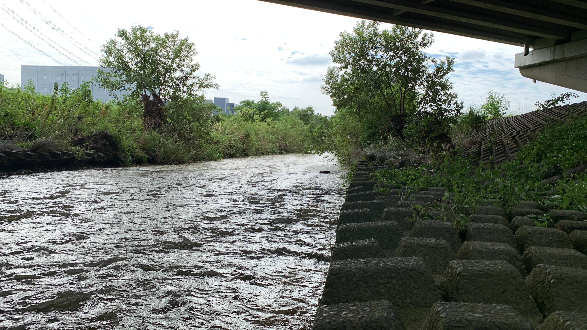
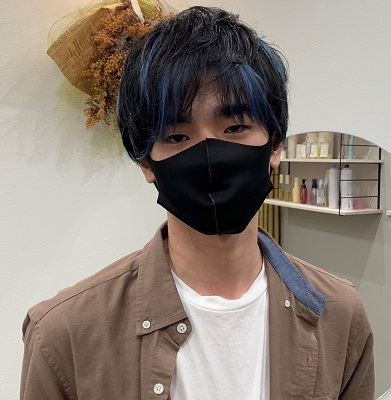
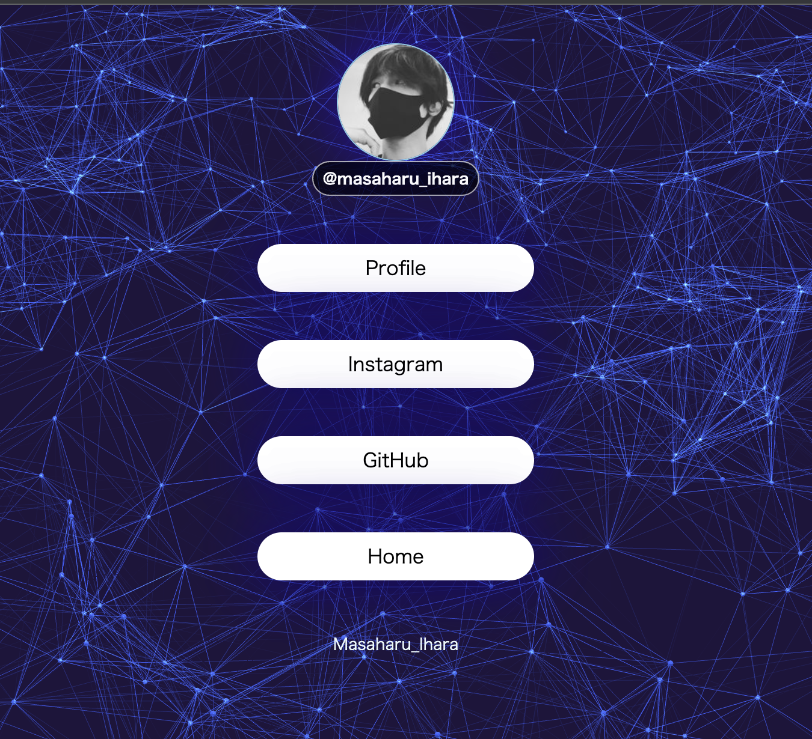
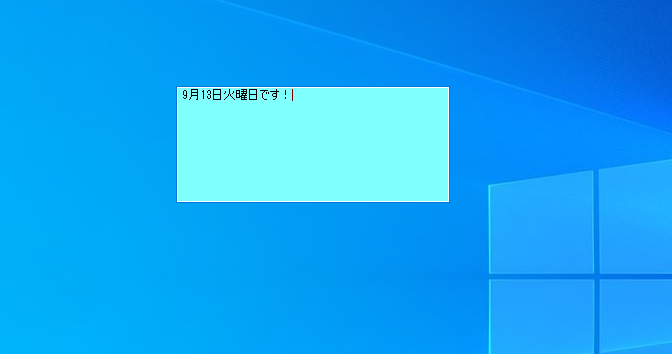

名前:井原 雅治
生年月日:1999年7月2日
出身地:愛知県
趣味:映画・アニメ・ゲーム・e-Sports観戦・運動・パソコン作り・音楽・動画
特技:剣道・陸上競技(中距離)

プロフィール

WORKS
-

HOME(HTML/CSS)
-

付箋(C#)
私の趣味・特技

映画
ヒーローもの映画で言うとマーベル作品の「アベンジャーズ」と「ドクターストレンジ」他は「007」と「ジョン・ウィック」。

ゲーム
FPS・RPGです。
FPSゲームは、中学生の頃に友人の家でPS3のFPSゲームの体験版をやったきっかけで遊んでて、照準を敵に合わせるのが難しかったけど、時間をかけてだんだんやりこんでいくとうまくなって勝てるようになった。そこからいろんなFPSゲームを触ってきた。
RPGは、FFシリーズとキングダムハーツシリーズかな。FF7とFF14やりこんでました。キングダムハーツは全シリーズはやったね。あとダークソウルも。
剣道部
中学1年から中学3年生まで剣道やってました。厳しい稽古の中、最後まで真面目に取り組みました。 大会は何回か出てたり、 特に級・段審査があって、一級～二段まで一発で取りました。段審査に関しては本当にうれしかった。
,陸上競技部
元々小学生の頃に人一倍運動場で何周も走り回って、マラソン大会で上位8位に入賞することが多く、走ることが好きで中学で陸上やろうと思ったけど陸上部が無く高校で陸上部に入部した。
入部した当時は先輩方が優しく迎えてくれたり、練習の教え方が本当に丁寧です。あとは、練習メニュー通りにひたすら走って、分析と記録をお互いに意見交換をしていた。3年生になってから後輩の練習サポートしつつ、自分の練習を行っていました。インターハイは出れなかったけどね（笑）。だけど記録が伸びたのもの良かったです。